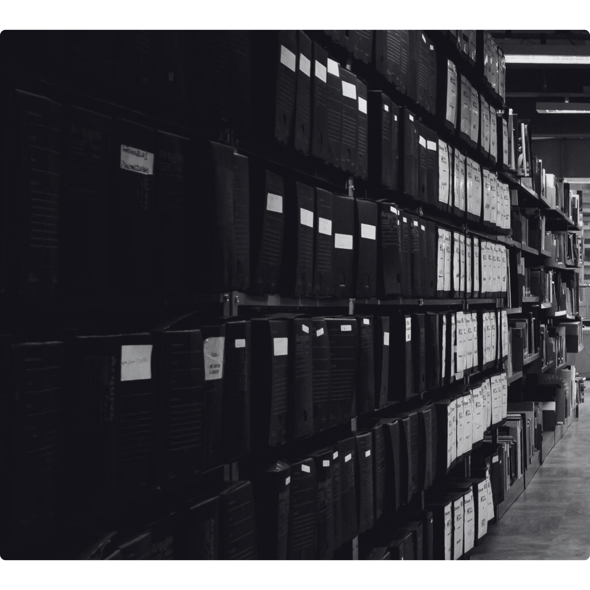
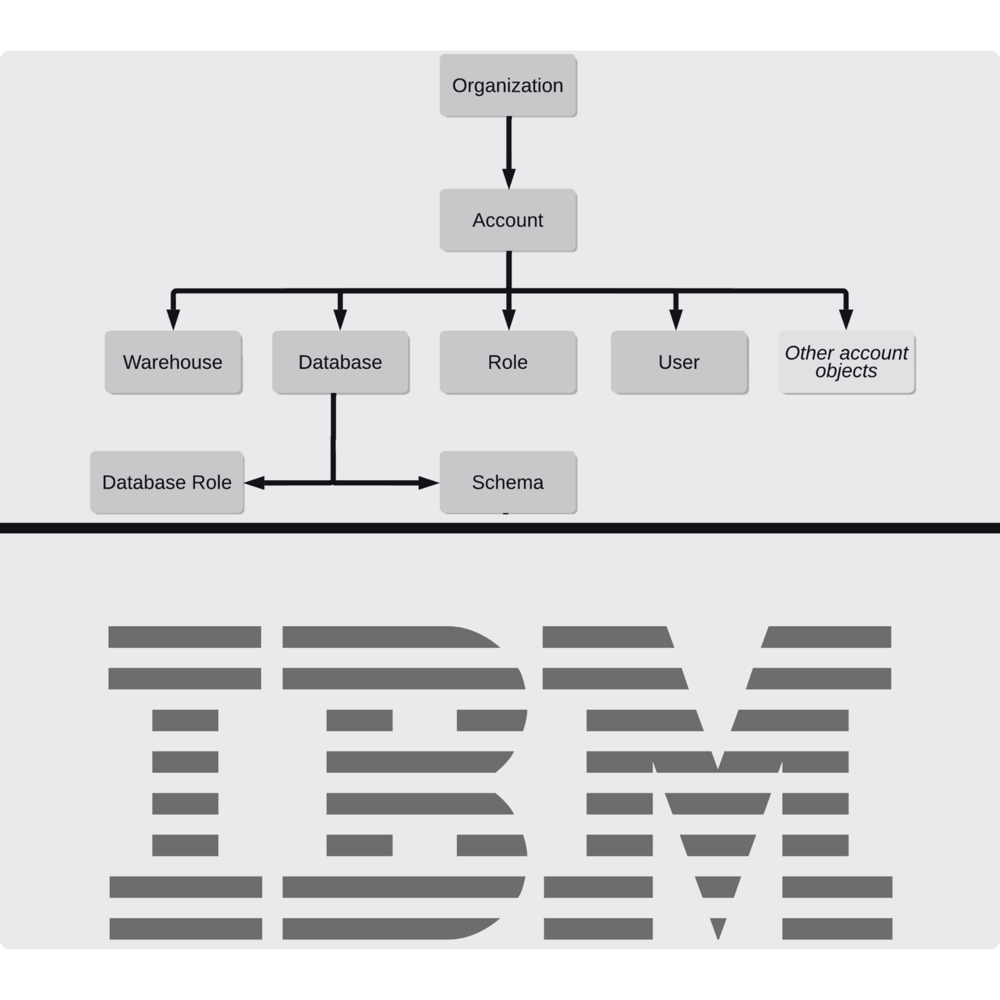
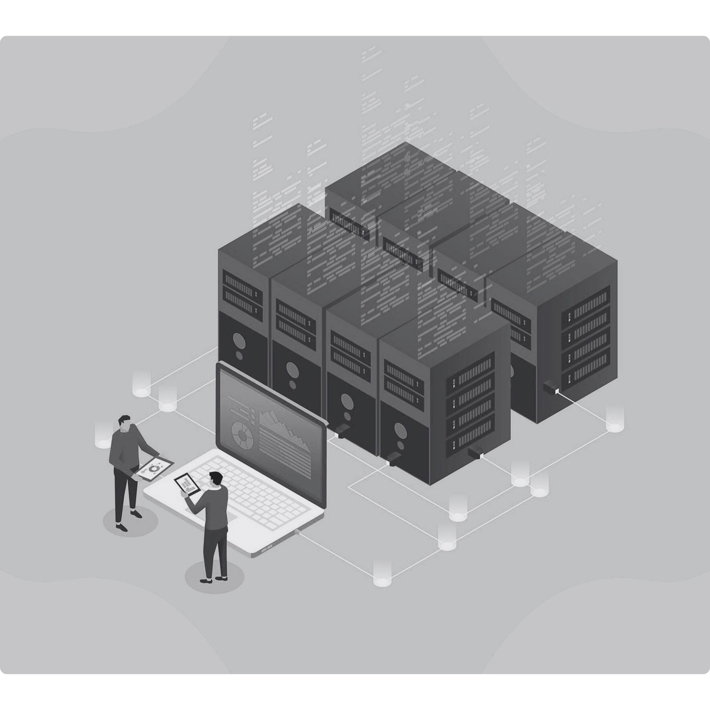

A HISTÓRIA DO BANCO DE DADOS
JORNADA DOS DADOS
Os bancos de dados foram criados para organizar grandes volumes de informações, permitindo acesso rápido, seguro e confiável. Sua importância está em facilitar a gestão de dados e tornar possível o funcionamento de sistemas modernos em diversas áreas.
1950 - 1960: OS PRIMÓRDIOS
Antes dos computadores modernos, os dados eram armazenados em fichas de papel, cartões perfurados e arquivos físicos.
Com a chegada dos primeiros computadores, surgiram os arquivos sequenciais — dados salvos em fita magnética, lidos de forma linear (do início ao fim). Era lento e difícil de manter.
Com a chegada dos primeiros computadores, surgiram os arquivos sequenciais — dados salvos em fita magnética, lidos de forma linear (do início ao fim). Era lento e difícil de manter.

1960 - 1970: Bancos Hierárquicos e de Rede
IBM lança o IMS (Information Management System) em 1966, considerado o primeiro sistema de banco de dados real. Ele usava uma estrutura hierárquica, como uma árvore de pastas.
Pouco depois, surgiu o modelo de rede, onde os dados podiam ter múltiplas ligações. Mais flexível, mas também mais complexo de usar.
Pouco depois, surgiu o modelo de rede, onde os dados podiam ter múltiplas ligações. Mais flexível, mas também mais complexo de usar.

1970 - 1980: A Revolução Relacional
Em 1970, o cientista E. F. Codd propôs o modelo relacional, onde os dados são organizados em tabelas com linhas e colunas, como planilhas!
Essa ideia mudou tudo! Surgiram os primeiros Sistemas Gerenciadores de Banco de Dados Relacionais (SGBD-R)
Essa ideia mudou tudo! Surgiram os primeiros Sistemas Gerenciadores de Banco de Dados Relacionais (SGBD-R)

1980 - 1990: Bancos em Grande Escala
Com o crescimento das empresas, os bancos de dados relacionais dominaram o mercado corporativo.
O armazenamento evoluiu: discos rígidos mais rápidos, mainframes e a popularização de clientes-servidores permitiram o uso em larga escala.
O armazenamento evoluiu: discos rígidos mais rápidos, mainframes e a popularização de clientes-servidores permitiram o uso em larga escala.

1990 - 2000: A Internet e os Dados
Com a chegada da internet, os dados explodiram. Começaram os primeiros desafios com grandes volumes de dados e acesso simultâneo por milhares de usuários.

2000 - 2010: Big Data e NoSQL
O termo Big Data ganha força: são dados em grande volume, velocidade e variedade.
Surgem bancos NoSQL, que não usam tabelas, mas sim documentos, grafos ou colunas flexíveis.
Surgem bancos NoSQL, que não usam tabelas, mas sim documentos, grafos ou colunas flexíveis.

2010 - HOJE: Nuvem e Inteligência de Dados
Os bancos de dados vão para a nuvem: você acessa tudo de qualquer lugar, sem precisar manter servidores locais.
Ferramentas como Firebase, Amazon RDS e Google BigQuery permitem projetos com milhões (ou bilhões!) de dados.
Ferramentas como Firebase, Amazon RDS e Google BigQuery permitem projetos com milhões (ou bilhões!) de dados.
Explore mais!
Agora que você conheceu a evolução dos bancos de dados ao longo do tempo, continue explorando o site para descobrir em detalhes como eles funcionam e por que são tão importantes no nosso dia a dia.